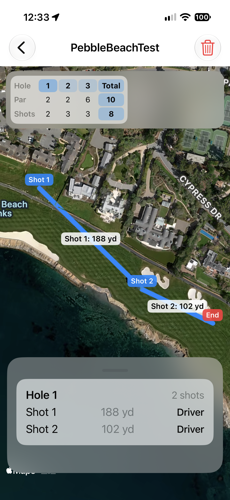
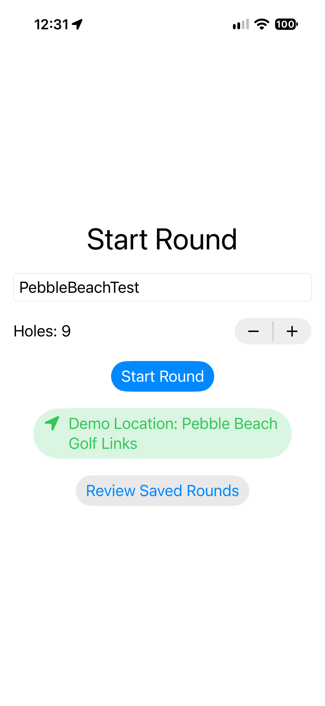
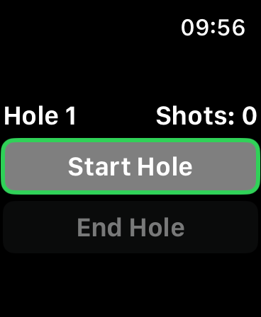
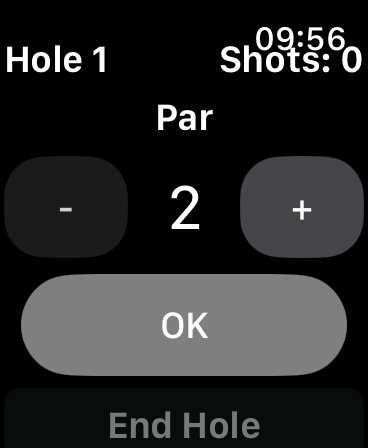
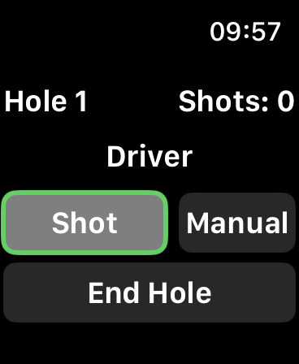
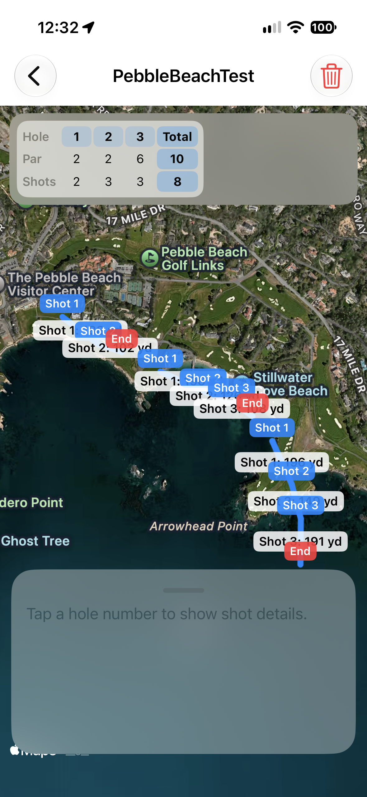

// R&D Sandbox · Vibe Development
A personal R&D Sandbox experiment to investigate XCode, SwiftUI and Vibe code iteration in an iOS companion based app deployment.

01 / Overview
GolfTracker is a personal project for iPhone & Watch app for golf shot tracking.
You start a round on the iPhone with a course name and number of holes, then use your Apple Watch to begin each hole, choose par and club, and then record the shots.
The phone tracks GPS positions, draws each shot on a satellite/hybrid map, calculates yardage, and keeps a hole-by-hole scorecard which can be reviewed at a later time.
02 / The challenge
Create an easy to use, companion based app, that allows for quick recording of golf shot location and yardage for future club selection reference via the watch.
The technical challenge was to learn the full stack for creation of the app. From Vibe SwiftUI code iterations, to deployment to device through XCode.
03 / Technical approach
Create an initial GPS recording app when commanded via the watch along with general flow.
Implement a general UX flow of a golf game, then iterate ideas and changes to the app via Vibe coding.
Test out the real world, then rinse and repeat steps 2 & 3.
04 / Breakdown

Setup a file name for saving the current golfing session. (Added demo location button to protect personal location privacy)

Once at a way point, you can start the first shot on the current hole.

Set the par limit of the current hole.

Manually add a shot, or end the current hole. The watch dial changes the selected club.

Tracked shots and scorecard.
Selected hole review. Outlines shot distance and club used.
05 / Results